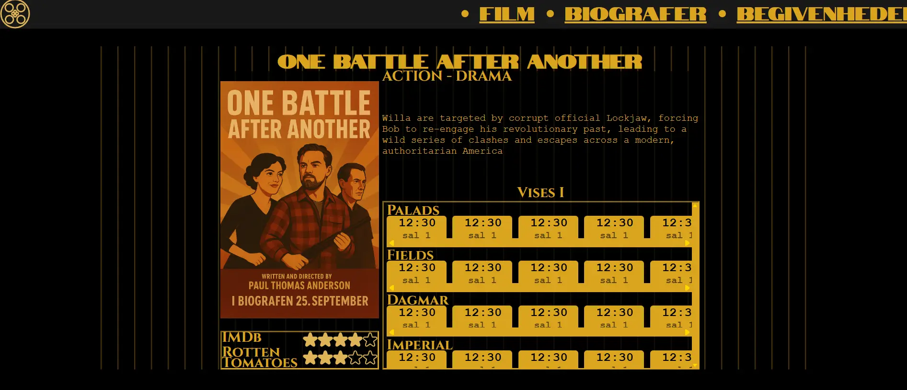

Tema 3
Research og idé
Projektet i tema 3 handlede om at idegenerere, designe og programmere en hjemmeside. Her var fokus på ideudvikling, design principper samt at bruge figma til det hele.
Min idé endte med at være et samlingsted for alle biograf tiderne/filmene, så det ville være nemmere at finde film man havde lyst til at se og/eller opdage film man kunne se i dag

vi blev introduceret til Wireframes (high- og lowfi), brugertests (likert, tænke højt, 5 sekunders), samt lidt om indhold.